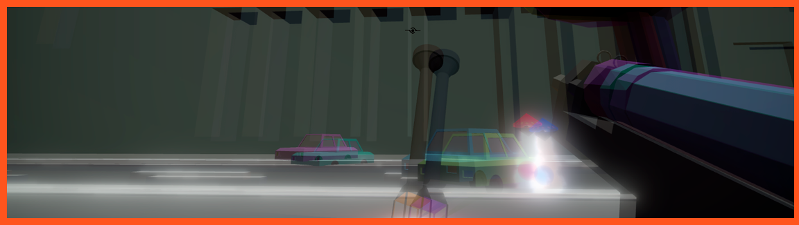

Re-place
Videojuego creado para la tercer GameJam en la que he participado. Está hecho con Unity3D y todo el arte así como la programación está realizada por mi equipo dentro de la GameJam.
El juego destaca en el apartado de programacion debido a todas las posibilidades que este ofrece. En primer lugar, tenemos tres tipos de armas, cada una acorde a un tipo de enemigo distinto y que esta sólo dañará a los enemigos de su color.
En segundo lugar, cada una de estas armas cuenta con una habilidad añadida. La morada, añade un "Dash" al jugador al pulsar una determinada tecla. La naranja, nos curará la vida si acertamos a los objetivos de color naranja. La azul nos generará un escudo protector alrededor para los enemigos más difíciles.
Aquí podéis encontrar el trailer del juego presentado: enlace.
Imágenes del juego
¿Cómo instalarlo?
Descarga el archivo .zip, extrae los archivos en una carpeta y doble click en GameJam2019.exe para jugar.